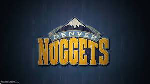
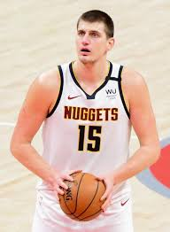

The Denver Nuggets are a NBA franchise. The Nuggets were founded in 1967 by the Ringsby family as the Denver Rockets. They played in the ABA until merging with the NBA in 1976. They were the Denver Rockets from 1967-1973 until rebranding as the Nuggets in 1974.
The Denver Nuggets have only won one championship even though they have made the playoffs many times. The Nuggets first made the playoffs in their first year of the NBA in 1976 and made it to the Conference Semifinals. The next year they made it a round further to the Western Confernce Finals. Then, from 1980-1989 they had a dominant streak of nine playoff appearances in a row. After that, they went on a cold streak. From 1990-2003 they only made the playoffs three times. Following that era, the Nuggets lost in the first round nearly every year from 2004-2013. After that they went back and forth in the playoffs until 2023. In 2023 the Denver Nuggets won their first NBA championship, beating the Miami Heat in the NBA Finals. The finals MVP was Nuggets star Nikola Jokic.

Photo by unkown from Flickr - Flickr.com

Photo by unknown from basketballspiller